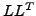
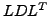

Incomplete factorization methods have long been used to derive preconditioners for Krylov subspace methods to solve large sparse systems of linear equations. Like most preconditioning methods, incomplete factorization has its share of drawbacks. First, a computer program implementing a non-static pattern incomplete factorization, which drops entries based on their magnitude and the density of their row or column in the incomplete factor, usually runs quite inefficiently due to dropping related bookkeeping tasks. As a result, for many problems, a direct factorization turns out to be mush faster, even if it consumes significantly more memory than incomplete factorization. Secondly, for symmetric positive-definite (SPD) coefficient matrices, Cholesky factorization may encounter a negative pivot. This would result in a breakdown if incomplete  factorization is used or an indefinite preconditioner if incomplete  factorization is used. Finally, the performance and effectiveness of incomplete factorization is not only problem dependent, but is also highly sensitive to parameters such as drop tolerance, fill factor, or level of fill. We describe our work that attempts to address the three aforementioned shortcomings of preconditioning based on incomplete factorization for SPD systems.
The first problem we address is that of performance. A typical implementation of complete sparse Cholesky factorization can realize a fairly respectable fraction of the peak performance of a machine. There are two main reasons for his. First, the numerical factorization is preceded by a symbolic factorization phase that computes the static structure of the factors. Secondly, supernodal and multifrontal techniques ensure that practically all numerical computation is performed by cache-friendly Level 2 and Level 3 basic linear algebra subprograms (BLAS). Block variants of incomplete factorization have been successfully used to enhance its performance through the use of higher level BLAS. These block algorithms, however, apply only to matrices that have a naturally occurring block structure. We have developed a sparse incomplete Cholesky factorization procedure that relies on dense or nearly dense blocks within the factors as they emerge. Therefore, this algorithm is able to extract higher efficiencies even for those matrices that have small or no blocks to begin with. The algorithm follows an elimination tree and proceeds much like a direct multifrontal algorithm. It inexpensively detects and uses supernodes along the portions of the elimination tree that consist of a chain of single-child parent nodes. We experimentally demonstrate a dramatic improvement in the speed of incomplete factorization at the cost of a small increase in the memory required to store the factors and intermediate data-structures.
The second problem we address is that of breakdown of the Cholesky process due to negative or near zero pivots. Traditional, methods to address this problem fall into two categories: Preemptive methods, which either modify the matrix or the factorization method to ensure that breakdown does not occur, and Reactive methods, which apply some sort of local correction or roll back the computation upon encountering a zero or negative pivot to incrementally increase fill-in until the factorization succeeds. Preemptive methods unnecessarily increase the cost and error of incomplete factorization, even for those matrices for which the standard incomplete factorization process may have succeeded. Reactive methods that roll back the computation are too costly and the ones that apply a local correction are too error prone. Our first approach, which we show to work well in practice, is to simply drop the onerous requirement that the preconditioner be positive-definite. In our elimination-tree based incomplete Cholesky factorization, we simply stop at a point along a branch of the tree where a negative pivot is encountered, and proceed with eliminating other parts of the tree where the Cholesky process can continue. When Cholesky cannot proceed any further, we compute the Schur complement, use threshold-based dropping to further sparsify it, and use a direct factorization on the remaining submatrix. During the solution phase, the conjugate gradient method is used if the preconditioner is positive-definite and GMRES or symmetric QMR is used if it is indefinite.
Finally, we build in features in both the incomplete factorization algorithm and its software implementation that minimize the effort required by the user to select appropriate parameters. The software automatically selects two thresholds droptol and fillfact based on the diagonal dominance of the coefficient matrix. Based on these thresholds, it selects RCM ordering when it expects low fill-in and nested dissection ordering when it expects high fill-in. In order to minimize the impact of initial parameter selection, our software takes advantage of the fact that many applications require the solution of a series of systems with the coefficient matrices changing gradually. Based in the relative cost of the factorization and iterative solution phases of the computation, our solver selects a direction and step size to automatically modify droptol and fillfact to apply to the next system. If at any point, the total time for preconditioner generation and solution exceeds that of the preceding iteration, then the thresholds are reset to their previous value and the step size is reduced. Our experiments indicate that this search converges to a reasonably good set of thresholds in 3 to 5 iterations. This relatively simple search built into the solver not only automates the process of threshold selection, but it also continuously adapts the thresholds if the characteristics of the coefficient matrices change while solving a sequence of systems.
We experimentally demonstrate that the techniques described above result in a robust and high-performance sparse linear solver.